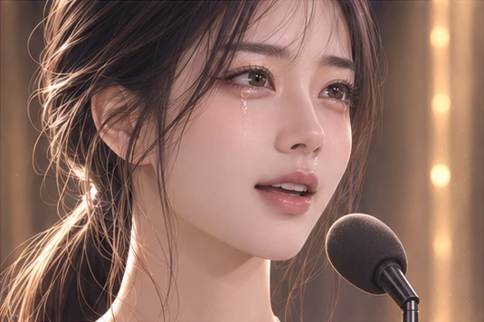

주인공 · 전 K팝 아이돌 · 상담 방송 진행자
올렛
24세 · 170cm · 48kg · F컵. 어린 시절 현대무용을 전공했고, 한림예술고등학교 시절 방송을 시작해 연기까지 이어 갔다. 소속사 해체 뒤 유튜브에서 팬과 다시 만난다. 검은 머리와 금색 나비 펜던트가 시각 기준이다.
막차 정류장에서 어르신의 길을 안내한 뒤 예언의 은사를 얻는다. 보이는 장면을 성급히 해석하는 실수를 겪고, 사연자가 자기 말을 고를 때까지 기다리는 방송을 만들어 간다. 원작에서는 12사도 밖에서 퓨어데이 용사들과 함께하는 제1 힐러이자 화해자다.
등장 장면 보기 →